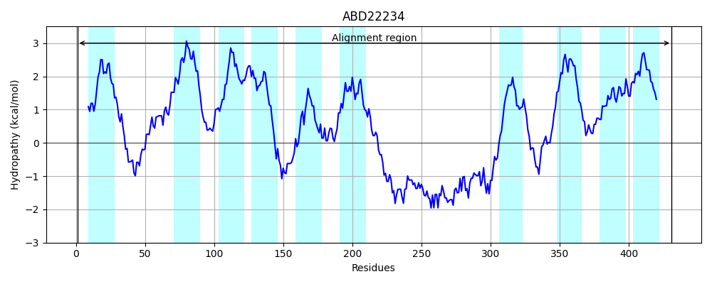
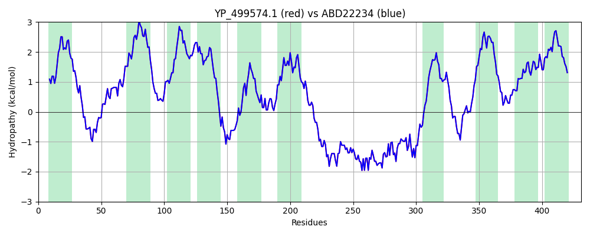

Hit Accession: ABD22234
Hit TCID: 9.B.414.1.1
Hit Description: gnl|BL_ORD_ID|1026 gnl|TC-DB|ABD22234.1|9.B.414.1.1 putative membrane protein [Staphylococcus aureus subsp. aureus USA300_FPR3757]
Mach Len: 431
e:0.000000
Query TMS Count : 10
Hit TMS Count: 10
TMS-Overlap Score: 9.850000
Predicted Substrates:None
BLAST Alignment:
Score: 2190 , Bit scores: 848 bits, E-value: 0.0e+00, Alignment length: 431, Percentage identity: 100
Query: 1 MSFLRKHAEIIFSYLIGIVSLFTGLIILINLPLIKQLNGGKKVDTHVHNVWEFLNAFFSEIIKVMSRFIGNFPIVSAIVIIIFGILVMLIGHTLLRTIKYDYDISIFFLVIGIMYFIITLILMTQVYGFFAVIFIIPFTIHIGYIVYKDELNQENVKNHFMWIIVSYGISYLITQIALYGRIDANEIESIDILSVNAFFIIMWLLGQMAIWNFLFLRRALPLTKQELGEEEPELSRTSKGNVTNQTKIHLKQLQDKTTEYARKTRRSVDLDKIRAKRDKFKKKVNDIIDIQEDDIPDWMRKPKWVKPMYVELFCGVVIFLFTFLEFNNRNALFVSGDWKLSQTQYVIEWVTLLILLFIIIAYIATTLTFHLKGKFYYLQLFMGSILFFKLLTEFINIMIHGLLLSVFITPTLLLMLLAIIISYSLQLRERP 431
MSFLRKHAEIIFSYLIGIVSLFTGLIILINLPLIKQLNGGKKVDTHVHNVWEFLNAFFSEIIKVMSRFIG+FPIVSAIVIIIFGILVMLIGHTLLRTIKYDYDISIFFLVIGIMYFIITLILMTQVYGFFAVIFIIPFTIHIGYIVYKDELNQENVKNHFMWIIVSYGISYLITQIALYGRIDANEIESIDILSVNAFFIIMWLLGQMAIWNFLFLRRALPLTKQELGEEEPELSRTSKGNVTNQTKIHLKQLQDKTTEYARKTRRSVDLDKIRAKRDKFKKKVNDIIDIQEDDIPDWMRKPKWVKPMYVELFCGVVIFLFTFLEFNNRNALFVSGDWKLSQTQYVIEWVTLLILLFIIIAYIATTLTFHLKGKFYYLQLFMGSILFFKLLTEFINIMIHGLLLSVFITPTLLLMLLAIIISYSLQLRERP
Sbjct: 1 MSFLRKHAEIIFSYLIGIVSLFTGLIILINLPLIKQLNGGKKVDTHVHNVWEFLNAFFSEIIKVMSRFIGDFPIVSAIVIIIFGILVMLIGHTLLRTIKYDYDISIFFLVIGIMYFIITLILMTQVYGFFAVIFIIPFTIHIGYIVYKDELNQENVKNHFMWIIVSYGISYLITQIALYGRIDANEIESIDILSVNAFFIIMWLLGQMAIWNFLFLRRALPLTKQELGEEEPELSRTSKGNVTNQTKIHLKQLQDKTTEYARKTRRSVDLDKIRAKRDKFKKKVNDIIDIQEDDIPDWMRKPKWVKPMYVELFCGVVIFLFTFLEFNNRNALFVSGDWKLSQTQYVIEWVTLLILLFIIIAYIATTLTFHLKGKFYYLQLFMGSILFFKLLTEFINIMIHGLLLSVFITPTLLLMLLAIIISYSLQLRERP 431 | Protein Hydropathy Plots: |
|---|
|  |
Pairwise Alignment-Hydropathy Plot:
|
|---|
|  |